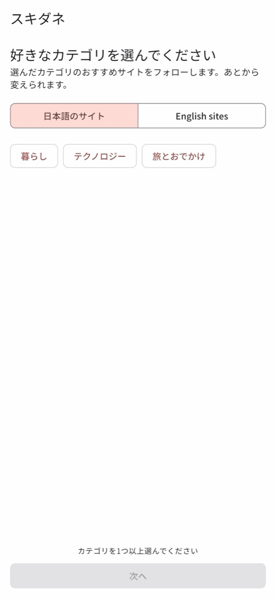
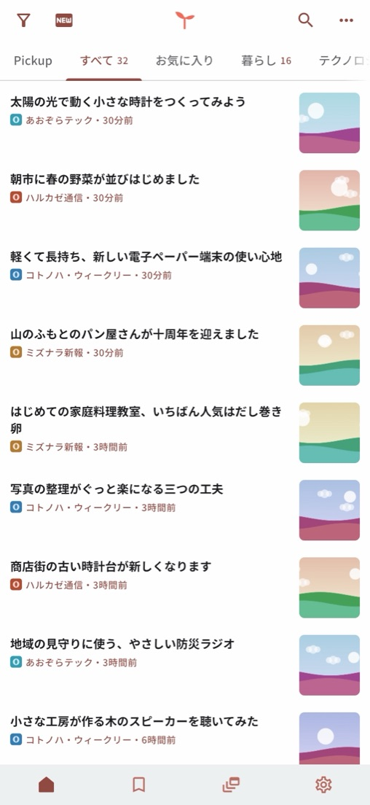
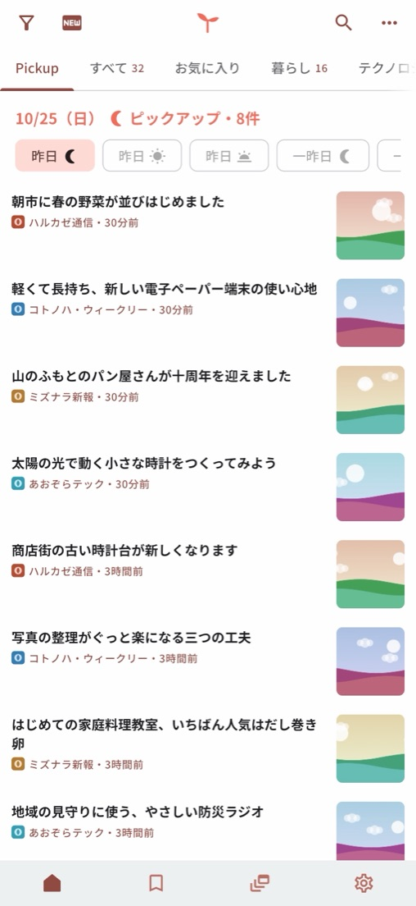
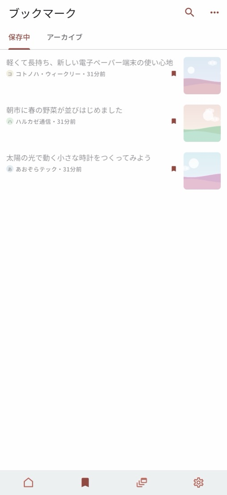

スキダネ
好きなニュースを選んで読むRSSリーダー
好きなことの更新を、
全部ここで。
日本語のニュースサイトやブログの更新をまとめて読める、シンプルなRSSリーダーです。「RSS」の知識は要りません。気になるジャンルを選ぶだけで、厳選したサイトが自動でそろいます。
- iOS
- Android
- Mac 準備中
- Windows 準備中




特長
ジャンルを選ぶだけで、そろう
初めて開いたとき、IT・ゲーム・スポーツ・マンガ・科学など、好きなカテゴリを選ぶだけ。おすすめのサイトをまとめてフォローして、すぐに読み始められます。読みたいサイトは URL を入れて自由に足せます。
サーバーなし。データは端末の中に
運営側のサーバーはありません。サイトからの記事の取得も、データの保存も、すべて端末の中で行います。どの記事を読んだかを運営者に送ることもありません。
記事は元のサイトで読む
記事の本文は、表示も保存もしません。見出し・要約・画像とサイト名を一覧に出し、タップすると元の記事ページを開きます。見出しや要約を書き換えることもしません。
Pickup と、自分好みの表示
読んだ記事の傾向から、合いそうな記事を端末の中で選んで、朝・昼・夜のピックアップにまとめます。記事の表示形式・テーマ・キーワードフィルターも選べます。
料金
無料
無料でお使いいただけます。記事一覧の途中に広告（「広告」と表示します）が入ります。
Pro（買い切り）
iPhone・iPad 版では、買い切りの「Pro」を購入すると広告が消えます（ほかの機能は変わりません）。Android 版の Pro は準備中です。価格は各ストアでご確認ください。
よくある質問
どの端末で使えますか？
Android 8.0 以上のスマートフォン・タブレットと、iOS 16 以上の iPhone、iPadOS 16 以上の iPad で使えます。
Mac 版「スキダネ for Mac」は macOS 14 以上で使えます。
アカウントの登録は要りますか？ 端末の間で同期できますか？
スキダネ独自のアカウントはありません。同期は任意で、Google アカウントでログインすると、ご自身の Google ドライブ（このアプリ専用の領域だけ）を使って、フォロー中のサイトや既読・ブックマークなどを同期できます。ドライブのほかのファイルには触れず、運営者が同期のデータを見ることもありません。
広告はどこに出ますか？
記事一覧の途中に、「広告」と表示した広告が入ります。記事ページの上には広告を重ねません。
おすすめにないサイトを読みたい。
「フィード」タブから、サイトの URL を入れて追加できます（更新情報のフィードを自動で探します）。ほかの RSS リーダーからは OPML ファイルで取り込めます。
掲載されている媒体の方へ
掲載や削除のご依頼は、掲載メディアの方へのページをご覧ください。
問い合わせ先は？
sukidane-support@mayudama.app へメールでお送りください。アプリの「設定」→「お問い合わせ」からも送れます。よくある質問はサポートのページにもあります。